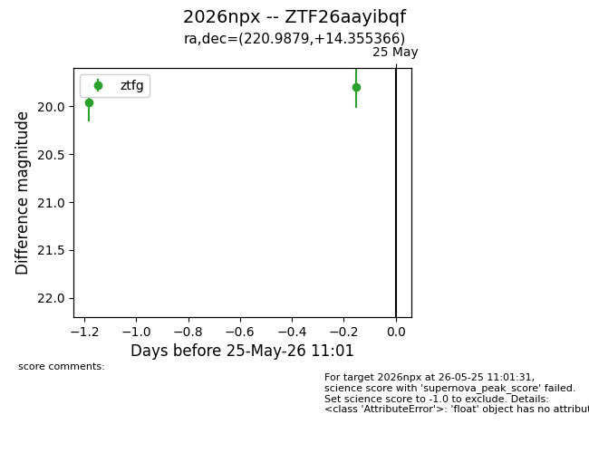
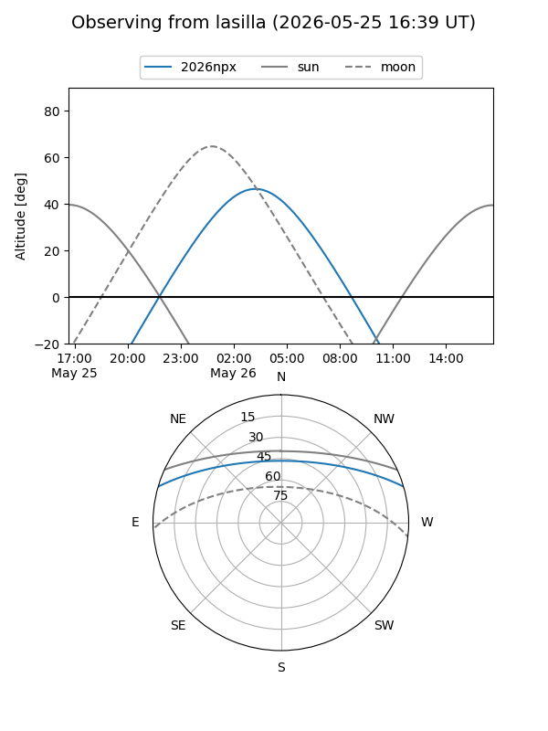
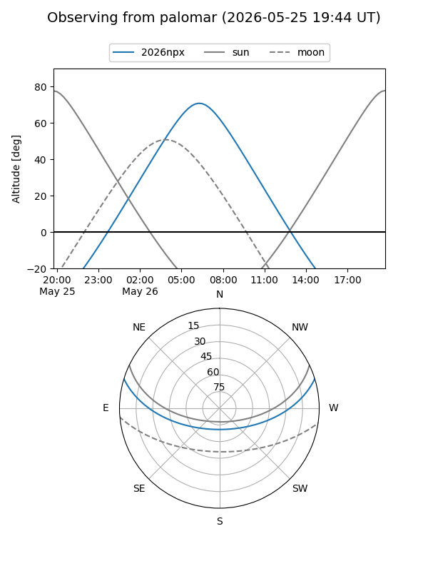
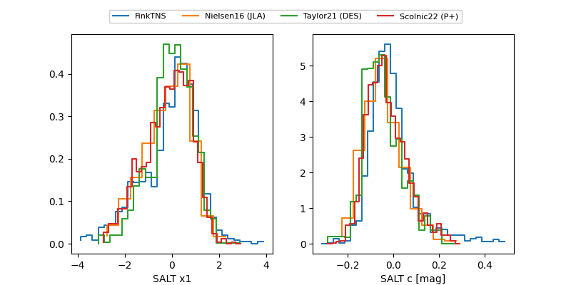

2026npx
Target 2026npx at 2026-05-25 11:03
Aliases and brokers:
lsst-FINK: link
lsst-Lasair: link
lsst-ALeRCE: link
ztf-FINK: link
ztf-Lasair: link
ztf-ALeRCE: link
TNS: link
YSE: link
alt names
ZTF26aayibqf (ztf,fink_ztf)
2026npx (tns,yse)
Coordinates:
equatorial (ra, dec) = 220.9879,+14.35537
equatorial (HMS+DMS) = 14:43:57.11,+14:21:19.32
galactic (l, b) = (12.6359,+60.85877)
Flags:
TNS confirmed: nan
Photometry:
last ztfg=19.80
2 ztfg detections
Lightcurve

Visibility


Additional plots
